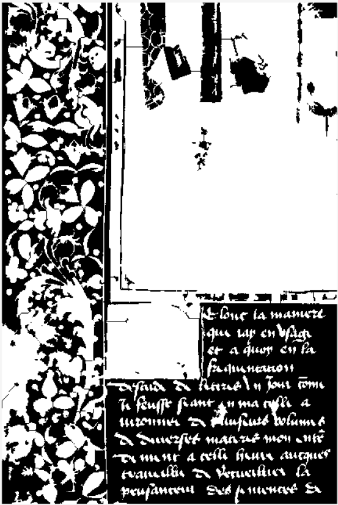
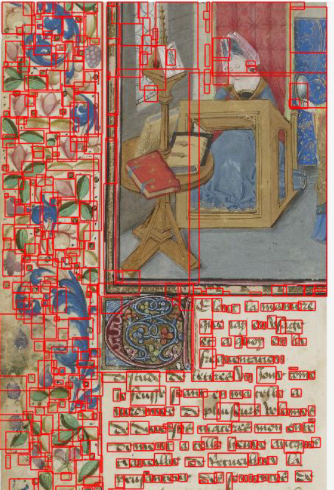
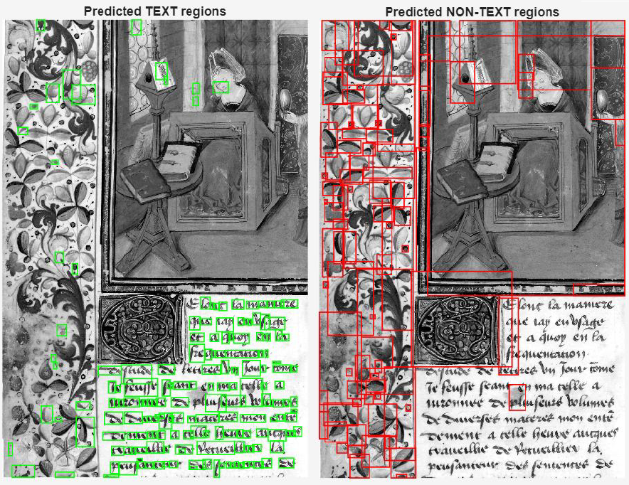

This project investigates the use of classical image processing and supervised machine learning techniques for the analysis of a high-resolution region of interest extracted from a medieval manuscript digitized by the Bibliothèque nationale de France. The objective was to build an interpretable workflow capable of separating handwritten text from decorative motifs, illustrated components, and background parchment.
The method operates at connected-component level: after foreground segmentation and morphological refinement, each region is described through geometric, topological, and intensity-based features, then classified using a supervised machine learning model.
Grayscale conversion, normalization, contrast enhancement, and Gaussian filtering.
Dual-threshold Otsu segmentation combined with morphological reconstruction.
Connected component extraction and feature computation using region-level descriptors.
Manual labeling of selected components and supervised text/non-text classification.



The segmentation stage combines conservative and permissive threshold masks derived from Otsu’s method. Morphological reconstruction is then used to recover faint connected foreground regions while suppressing isolated background artifacts. Additional morphological operations remove small components, close gaps, and selectively fill holes without excessively altering ornamental structures.
Large decorative regions are handled separately through marker-controlled watershed segmentation, allowing fused components to be subdivided before recombination with preserved text-like components. This produces a final binary mask suitable for connected component extraction.
Each connected component is represented using a feature vector combining geometric, topological, and intensity-based descriptors. These include area, perimeter, major and minor axis length, eccentricity, solidity, extent, Euler number, mean intensity, aspect ratio, circularity, fill ratio, and a stroke-width proxy.
A subset of connected components was manually labeled as text or non-text using an interactive MATLAB workflow. The normalized feature matrix was then used to train a linear Support Vector Machine for binary classification.
The MATLAB implementation is available for viewing as part of the project documentation.
View MATLAB implementation